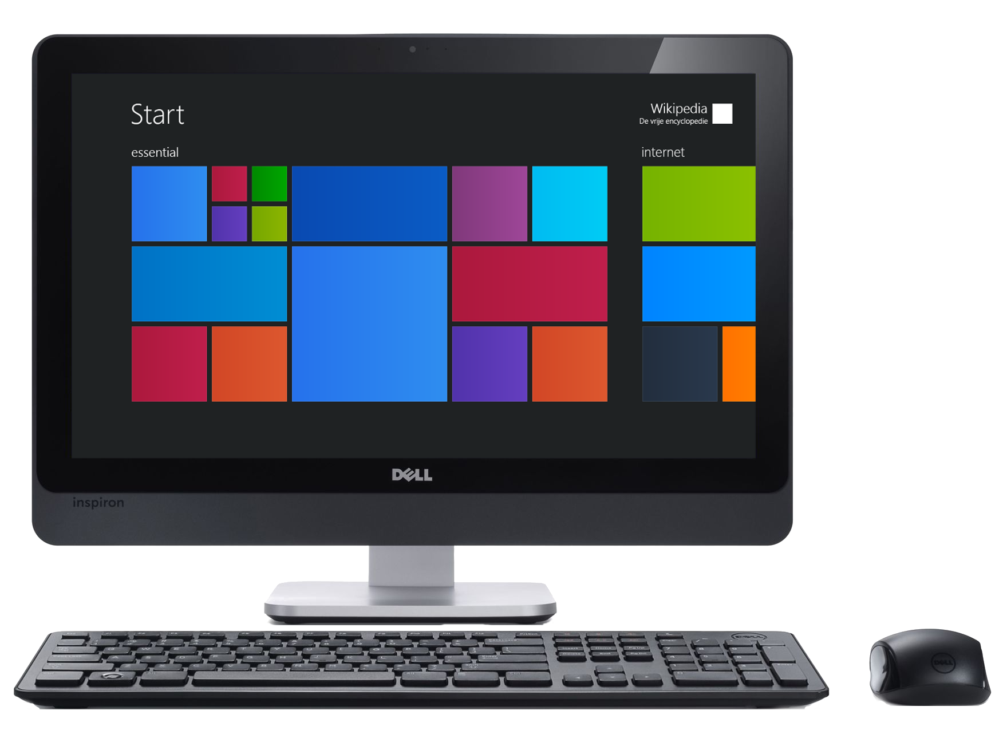
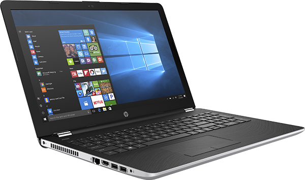
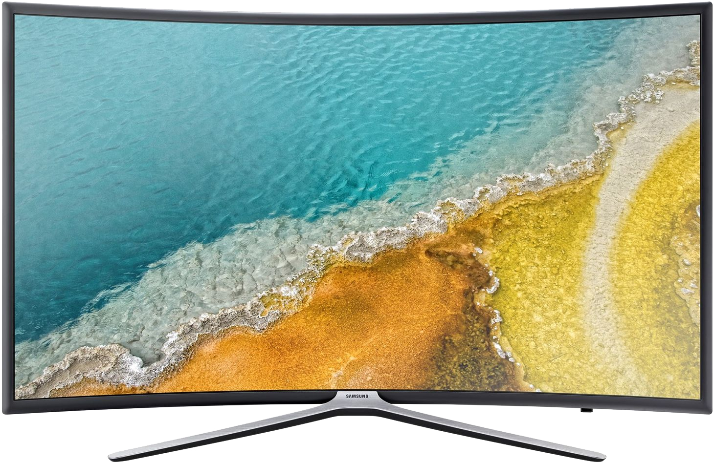

Ремонт телефонов, смартфонов в Нижнем Новгороде

Если вы ищете быстрый и недорогой ремонт специалистом своего дела, то вы обратились по адресу. С момента звонка до выдачи аппарата вам на руки я контролирую процесс. Вы можете быть уверены, что ремонт будет выполнен качественно. Моя задача - довольный клиент. Работа на результат, который полностью понравится мои заказчикам это - лучшая оценка работы. Ремонт вашего любимого девайся будь то смартфон, телефон, КПК будет произведен качественно, за разумные деньги и в минимальные сроки. Сам процесс с момента приема аппарат в ремонт и его выдачи вам на руки контролируется именно мной как владельцем сервиса. Доверить аппарат человеку, который у вас его принял, произвел ремонт и выдал гораздо надежнее, чем сервису с многочисленными людьми, отвечающими за разные процессы. По сравнению с другими СЦ накручивающими вам бесполезные услуги и сервисы, мои цены будут ниже на 20-25%. Например замена разъема зарядки обойдется от 600р, замена дисплея от 500р, замена сенсорного стекла от 500р. Рекомендую вам написать мне, либо позвонить и узнать, сколько вы сможет сэкономить на ремонте по сравнению с обычными сервисными центрами.
Бренды
iМастер ремонтирует телефоны, смартфоны, КПК любых моделей в том числе и следующих брендов:
iPhone, Samsung, Xiaomi, Huawei, Nokia, Sony, Meizu, Lenovo, ASUS, LG, DEXP, Blackview, Prestigio, DEXP, Vivo, Oppo, Doogee, Philips, Motorola, HTC
Виды ремонта
Наша фирма производит программный и аппаратный ремонт телефонов, смартфонов, КПК в Нижнем Новгороде:
- 1
- 2
- 3
- 4
- 5
Ремонт планшетов в Нижнем Новгороде

Планшеты в наше время стали неотъемлемой частью жизни. Кому-то они нужны для хобби и развлечений, а кому-то для работы и бизнеса. Но не стоит переживать, если вы остались без вашего верного друга и помощника. iМастер решит вашу проблему в минимальные сроки и за разумные деньги. Моя задача - осуществить ремонт в любое удобное время и за стоимость соразмерную степени сложности ремонта. Работая КРУГЛОСУТОЧНО именно для Вас, я исправлю любой дефект. Например, ремонт разъема зарядки обойдется вам от 600р, замена экрана от 800р, замена аккумуляторной батареи от 500р. Не спешите принимать решение по замене планшета, просто позвоните или напишите. Я уверен мы решим вашу проблему.
Бренды
iМастер ремонтирует планшеты любых моделей в том числе и следующих брендов:
Apple, Samsung, Huawei, Sony, Asus, Lenovo, Acer, Google, Alcatel, Prestigio, Microsoft, DEXP, Irbis, Digma
Виды ремонта
Наша фирма производит программный и аппаратный ремонт планшетов в Нижнем Новгороде:
- 1
- 2
- 3
- 4
- 5
Ремонт персональных компьютеров и моноблоков в Нижнем Новгороде
Сервис iМастер предлагает Вам ремонт ПК на дому с бесплатным выездом. В любое время дня и ночи я всегда приду на помощь. Диагностика не займет много времени, а имея все комплектующие в наличии, отремонтировать вашего друга получится в течение часа. Цены на ремонт также абсолютно демократичные: замена блока питания от 800р, замена материнской платы от 500р, замена жесткого диска от 500р.
Бренды
iМастер ремонтирует ПК, моноблоки и их комплектующие любых моделей в том числе и следующих брендов:
Apple, HP, Asus, Dell, Alienware, Lenovo, Razer, Acer, Microsoft, MSI
Виды ремонта
Наша фирма производит программный и аппаратный ремонт персональных компьютеров, моноблоков и их комплектующих в Нижнем Новгороде:
- 1
- 2
- 3
- 4
- 5
Ремонт ноутбуков и нетбуков в Нижнем Новгороде
Произвести ремонт ноутбука или нетбука не так просто. Сервисных центров оказывающих данную услугу очень много, но как качественно будет произведен ремонт – вопрос неоднозначный. iМастер гарантирует ремонт частным мастером с многолетним опытом работы в данном направлении. Вы всегда можете позвонить и узнать все о процессе ремонта, сроках заказа запчастей, статусе ремонта непосредственно у исполнителя. Я дорожу своими заказчиками и гарантирую прозрачность выполнения ремонта так же как и его цену. В процессе ремонта она никогда не поменяется. Например, замена матрицы стоит 800р, замена жесткого диск 500р, замена клавиатуры 500р. Цены на ремонт нашего сервисного центра являются демпинговыми, но только для того чтобы показать действительно конкурентоспособные цены.
Бренды
iМастер ремонтирует ноутбуки и нетбуки любых моделей в том числе и следующих брендов:
HP, Asus, Dell, Alienware, Lenovo, Razer, Acer, Microsoft, Huawei, Apple, MSI, Samsung
Виды ремонта
Наша фирма производит программный и аппаратный ремонт ноутбуков и нетбуков в Нижнем Новгороде:
- 1
- 2
- 3
- 4
- 5
Ремонт телевизоров в Нижнем Новгороде
iМастер с полной уверенностью может гарантировать качественный ремонт вашего телевизора. Имея многолетний опыт ремонта техники КБТ и надежных поставщиков комплектующих с гарантией на запчасти до 3х лет на произведенные детали, я могу гарантировать вам дальнейшее многолетнее использование вашей техники по назначению. Будь то ремонт подсветки телевизора, ремонт блока питания, ремонт платы управления или что-либо другое. Ремонт любой сложности не скажется на сроке эксплуатации вашей любимой техники.
Бренды
iМастер ремонтирует игровые приставки любых моделей в том числе и следующих брендов:
Samsung, LG, Sony, Hisense, Panasonic, Philips, TCL, Skyworth, Vizio, Sharp, Haier, Harper, Hyundai, Loewe
Виды ремонта
Наша фирма производит программный и аппаратный ремонт телевизоров в Нижнем Новгороде:
- Замена тачскрина (сенсорного экрана)
- Замена программного обеспечения (прошивка GPS навигатора)
- Восстановление GPS после попадания жидкости
- Ремонт после падения и других механических повреждений
- Ремонт кнопок управления и многое другое
Ремонт игровых консолей / приставок в Нижнем Новгороде

Рано или поздно ваша любимая игровая станция выходит из строя, будь то XBOX, PlayStation Nintendo или любая другая. Тогда каждый геймер, либо отец такого геймера задумывается кому доверить дорогую памяти и сердцу консоль. Не переживайте - если вы это читаете, можете быть уверены, что вы попали именно по адресу. Я возьмусь за возрождение вашей приставки. Не успеет выйти новое обновление вашей любимой игры, а ваш любимый клан собраться на новые подвиги, как вы получите обновленное игровое агрегат с устраненными проблемами. Такие неисправности как ребболинг видео чипа, замена блока питания, чистка системы охлаждения, ремонт корпуса и много другое решается буквально за день. Не стесняйтесь обращаться, вы останетесь довольны ценами и сервисом.
Бренды
iМастер ремонтирует игровые приставки любых брендов, в том числе и следующие модели:
Sony PlayStation 3, Sony PlayStation 4, XBOX 360, XBOX ONE, PlayStation Portable (PSP), PlayStation Vita (PS Vita), Nintendo DS, Nintendo 3DS, Nintendo Wii, Nintedo Switch и многие другие
Виды ремонта
Наша фирма производит программный и аппаратный ремонт игровых приставок в Нижнем Новгороде:
- Замена тачскрина (сенсорного экрана)
- Замена программного обеспечения (прошивка GPS навигатора)
- Восстановление GPS после попадания жидкости
- Ремонт после падения и других механических повреждений
- Ремонт кнопок управления и многое другое
Ремонт фотоаппаратов, видеокамер, экшен-камер в Нижнем Новгороде
В наше время очень тяжело найти специалиста по ремонту фото и видеотехники, но будьте уверены – с моим многолетним опытом работы в данном направлении мне не составит труда ремонт как обычного цифрового аппарата, так и дорогого зеркального . Чтобы убедиться в качестве, сроках и приятных ценах iМастер, я рекомендую вам хотя бы раз обратиться, и вы будете приятно удивлены. Многие запчасти уже находятся в наличии, такие как лентопротяжные механизмы, линзы, блоки питания и прочее, а многие сервисы отказываются от ремонта сложных устройств. Обратившись в iМастер вы останетесь довольны. Ремонт объектива стоит от 800р, замена батарейного отсека от 500р, чистка объектива от 800р.
Бренды
iМастер ремонтирует фотоаппараты, видеокамеры, экшен-камеры любых моделей в том числе и следующих брендов:
Виды ремонта
Наша фирма производит программный и аппаратный ремонт фотоаппаратов, видеокамер, экшен-камер в Нижнем Новгороде:
- Замена тачскрина (сенсорного экрана)
- Замена программного обеспечения (прошивка GPS навигатора)
- Восстановление GPS после попадания жидкости
- Ремонт после падения и других механических повреждений
- Ремонт кнопок управления и многое другое